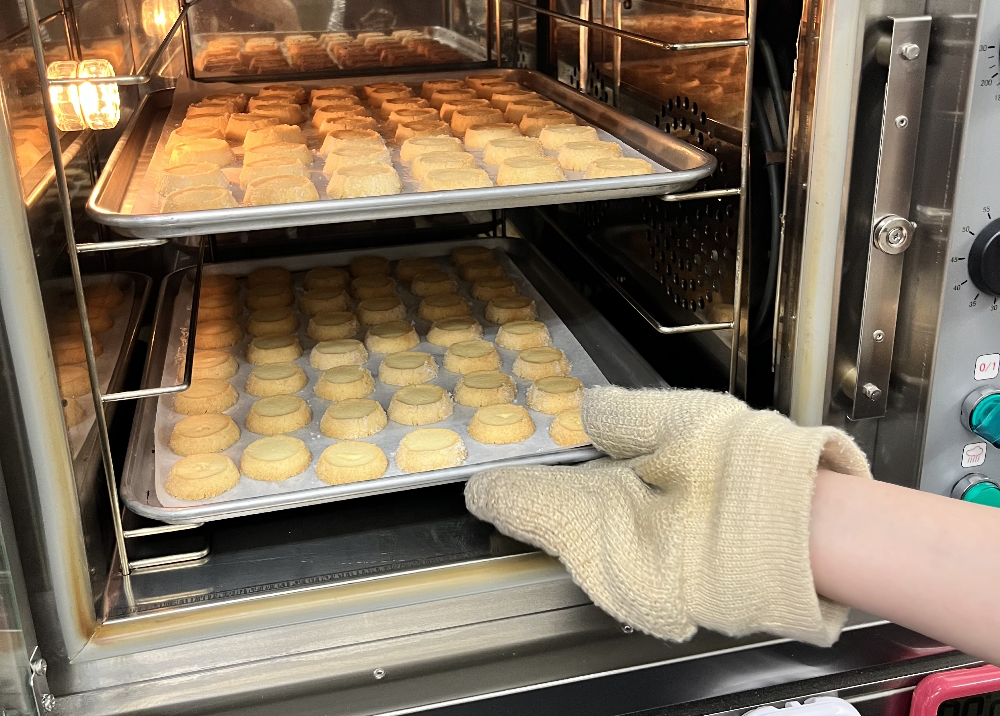
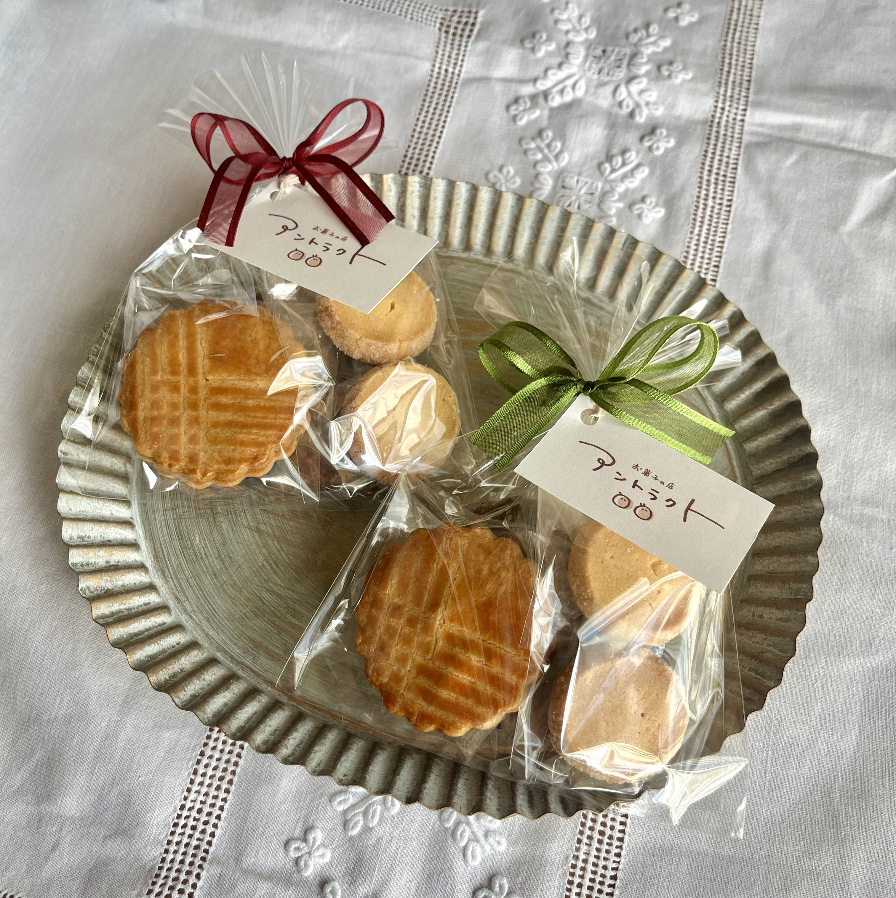
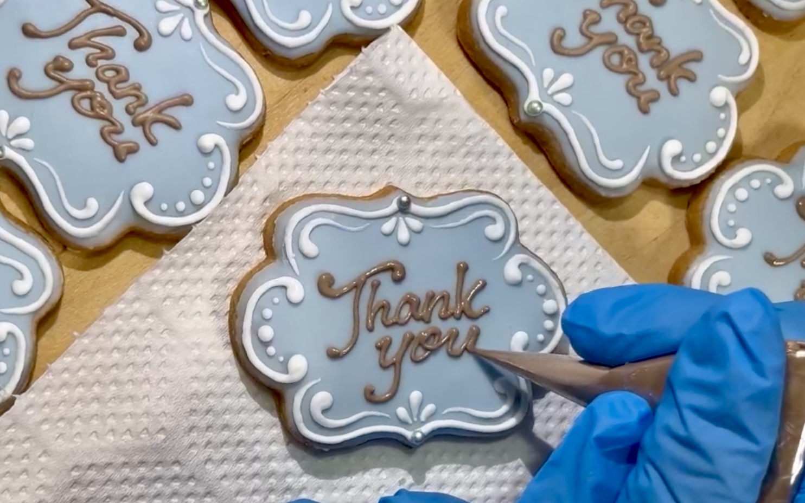

「焼き菓子にも鮮度がある」
神戸の修行先でシェフから教わったのは
一切の妥協のないお菓子作りでした。
少ない生産量で常にできたてを提供していたそのお店のお菓子は
バターの香り ナッツの触感 粉の香ばしさ
全ての素材が「いま私を食べて！」と言っているかのように
生き生きとしていました。
焼き菓子は長く日持ちがすると思われていますが
その”一番おいしい時期”は決して長くありません
全てのお客様に、一番おいしい状態のお菓子を届けるべく
少しずつ、一つ一つ丁寧に焼き上げています。

「想いの伝わるアントラクトのお菓子」
そんな風に選んでもらいたくて、丁寧に焼き上げたお菓子は、
きっとあなたの想いを伝えるお手伝いができると思います。
アントラクトのひとつひとつの焼き菓子は、
”いかに皆さんに愛されるお菓子になれるか”を
考え抜いた末に生まれました。
まずはお一つから試してみてください。もし気に入ってもらえたなら、
大切な人へのプレゼントなどにもお選びいただけたら幸いです。

「想いに寄り添うお店作り」
買いに来てくれた全ての方に、足を運んでくれた理由と
”想い”があると思います。
アントラクトはその”想い”に寄り添えるようなお店作りを目指しています。
手に取っていただいた”ひとつ”が、誰かの”特別”になれるように
常に、食べてくれる人のことを想って
丁寧な手仕事を心掛けています。
